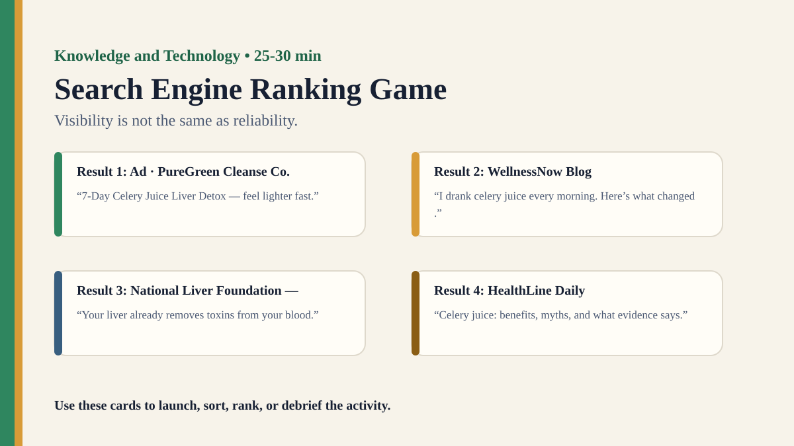

Free classroom resource pack
Search Engine Ranking Game
Visibility is not the same as reliability.
Included Files
{kind=link}
Visual Prompt

Student Prompt
Rank the six search results from most reliable to least reliable. Then identify which ranking signal influenced you most: expertise, popularity, freshness, sponsorship, relevance, or emotional appeal.
Actual Lesson Questions
These are the questions students answer during the lesson, not just teacher-facing discussion prompts.
| # | Question for students | Teacher key / cue |
|---|---|---|
| 1 | Which result would you click first, and why? | Look for whether students choose visibility, credibility, relevance, or emotion. |
| 2 | Which result is most reliable for the query? | Likely result 3 or 4; result 6 is credible but indirect. |
| 3 | Which result might a popularity-based ranking put first? | Result 5: TikTok Clip @CleanBodyGuru. |
| 4 | Which result might a sponsorship-based ranking put first? | Result 1: PureGreen Cleanse Co. advertisement. |
| 5 | Which result best shows expertise? | Result 3: National Liver Foundation patient guide. |
| 6 | What does this show about visibility and reliability? | A ranking system can make a weak result visible before a strong one. |
Concrete Stimulus Packet
Print or project these exact stimuli. Students should inspect these before the debrief.
Stimulus
Result 1: Ad · PureGreen Cleanse Co.
“7-Day Celery Juice Liver Detox — feel lighter fast.”
Sells detox juice packs. No author listed. Ranking signal: Sponsorship.Stimulus
Result 2: WellnessNow Blog
“I drank celery juice every morning. Here’s what changed.”
Personal story, dramatic before/after claims, no medical sources. Ranking signal: Emotional appeal.Stimulus
Result 3: National Liver Foundation — Patient Guide
“Your liver already removes toxins from your blood.”
Explains liver function; reviewed by medical advisers. Ranking signal: Expertise.Stimulus
Result 4: HealthLine Daily
“Celery juice: benefits, myths, and what evidence says.”
Notes hydration/nutrients but says detox claims are unsupported. Ranking signal: Relevance.Stimulus
Result 5: TikTok Clip: @CleanBodyGuru
“Doctors don’t want you to know this detox trick.”
2.1M views, no evidence provided. Ranking signal: Popularity.Stimulus
Result 6: Research Summary: Journal of Nutrition Education
“Vegetable intake and health outcomes.”
Peer-reviewed; does not test celery juice detox claims directly. Ranking signal: Academic credibility, indirect relevance.Student Task
Query: Does drinking celery juice detox your liver? Rank all six results from most reliable to least reliable, then explain which signal shaped your ranking.
Teacher Key / Reveal
A search engine could rank result 5 highest by popularity, result 1 highest by sponsorship, result 4 highest by relevance, and result 3 highest by expertise. Visibility is not the same as reliability.
- Most medically reliable: Result 3, then Result 4.
- Most popular-looking: Result 5.
- Most commercially promoted: Result 1.
- Most academically credible but indirect: Result 6.
- Least reliable for knowledge: Result 5 or Result 2, depending on criteria.
Teacher Run Sheet
- Prepare a starter stimulus using: Mock search results ranked by popularity, expertise, freshness, sponsorship, or relevance.
- Print or project the student response grid before the activity begins.
- Plan a private first-response moment before any group discussion.
Concrete Examples
- Mock search results ranked by popularity, expertise, freshness, sponsorship, or relevance.
- A query about a health claim with credible, vague, commercial, and opinion sources.
- Two ranking rules that produce different 'top answers' for the same searcher.
Printable Activity Cards
Print, cut, sort, rank, annotate, or project these cards. They are deliberately fictional/open so teachers can adapt them safely.
Stimulus
Result 1: Ad · PureGreen Cleanse Co.
“7-Day Celery Juice Liver Detox — feel lighter fast.”
Sells detox juice packs. No author listed. Ranking signal: Sponsorship.Stimulus
Result 2: WellnessNow Blog
“I drank celery juice every morning. Here’s what changed.”
Personal story, dramatic before/after claims, no medical sources. Ranking signal: Emotional appeal.Stimulus
Result 3: National Liver Foundation — Patient Guide
“Your liver already removes toxins from your blood.”
Explains liver function; reviewed by medical advisers. Ranking signal: Expertise.Stimulus
Result 4: HealthLine Daily
“Celery juice: benefits, myths, and what evidence says.”
Notes hydration/nutrients but says detox claims are unsupported. Ranking signal: Relevance.Stimulus
Result 5: TikTok Clip: @CleanBodyGuru
“Doctors don’t want you to know this detox trick.”
2.1M views, no evidence provided. Ranking signal: Popularity.Stimulus
Result 6: Research Summary: Journal of Nutrition Education
“Vegetable intake and health outcomes.”
Peer-reviewed; does not test celery juice detox claims directly. Ranking signal: Academic credibility, indirect relevance.Lesson question
Question 1
Choose one result before discussing.
Look for whether students choose visibility, credibility, relevance, or emotion.Lesson question
Question 2
Rank reliability, not attractiveness.
Likely result 3 or 4; result 6 is credible but indirect.Lesson question
Question 3
Use the views and emotional hook.
Result 5: TikTok Clip @CleanBodyGuru.Lesson question
Question 4
Look for the ad label.
Result 1: PureGreen Cleanse Co. advertisement.Lesson question
Question 5
Look for reviewed medical guidance.
Result 3: National Liver Foundation patient guide.Lesson question
Question 6
Turn the activity into a TOK claim.
A ranking system can make a weak result visible before a strong one.Student task
Student Task
Query: Does drinking celery juice detox your liver? Rank all six results from most reliable to least reliable, then explain which signal shaped your ranking.
How do ranking systems influence what counts as visible, credible, or relevant?Teacher reveal
Teacher Reveal
A search engine could rank result 5 highest by popularity, result 1 highest by sponsorship, result 4 highest by relevance, and result 3 highest by expertise. Visibility is not the same as reliability.
Most medically reliable: Result 3, then Result 4. | Most popular-looking: Result 5. | Most commercially promoted: Result 1. | Most academically credible but indirect: Result 6. | Least reliable for knowledge: Result 5 or Result 2, depending on criteria.Student Recording Sheet
| Card / stimulus | What I noticed | What I inferred | Evidence | Confidence |
|---|---|---|---|---|
Debrief Prompts
- Does visibility affect what people accept as true?
- Is the first answer usually the best answer?
- How should search engines balance relevance, profit and public knowledge?